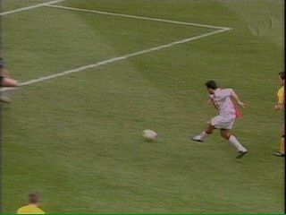

|
Ajax - Roda JC (4-2) 14 maart 2004 |
Ioannis wil de bal van voormalig clubgenoot
Mark Luijpers.
Nadat eerst Sonck en daarna Van der Vaart op
de subliem keepende Kujovic stuiten, kan Mitea
in derde instantie de bal inschieten: 1-0 (26').

Via Maxwell en Van der Vaart is de bal bij
Anastasiou belandt die hem vervolgens simpel
binnenschuift: 2-0 (37').
Met de knie schiet Rewan door de benen van
Lobont 2-1 uit een corner van Van Dessel (44').
Wordt Iwan Redan Roda's nieuwe topscorer?
Een minuut later kopt Anastasiou vanuit zuiver
buitenspelpositie 3-1 binnen (45').
In de 46e minuut haalt Luijpers verwoestend uit,
(a la San Siro), en zo zien de joden uit Margraten
Roda tot hun ontzetting terugkomen: 3-2.
Vicelich, vandaag vanaf het begin erbij, feliciteert
zijn teamgenoot.
Hoe kan God zijn zonen nu zien in een stadion met
een dak???
Topkans voor Senden om de gelijkmaker in te
koppen. Helaas net naast.
Uit een voorzet van Ibrahimovic kan Pienaar met
een sliding 4-2 scoren (82').
Foto's van de "andere kant": Ajax Foto-site
Na deze nederlaag blijft Roda op een zesde plaats
staan, maar ziet het concurrenten Heerenveen en
AZ wegsprinten. Een rechtstreeks uefa-ticket wordt
nu erg moeilijk. De inschrijving voor de Intertoto
lijkt daarom een juiste beslissing.